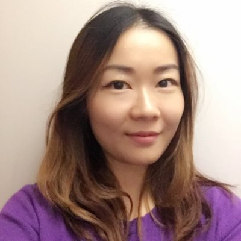
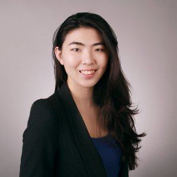

Zhenni Qian
Zhenni Qian is the partner in charge of the "Consumer Goods, Retail & Digital » practice. She has a deep know-how of the sector and her past clients include: L’Oréal, Procter & Gamble, Alibaba, Amazon.
Prior to joining Waqiam Consulting, Zhenni worked for Alibaba for 5 years as Head of APAC Strategy, leading the building and implementation process of the 2020 Strategy Plan. She developed strong leadership skills and a deep knowledge of the consumer goods sector. She also worked for 3 years at L’Oréal in the Paris HQ as a Brand Manager.
Ms. Qian holds a bachelor’s degree in French Language and Literature from Fudan University and a Master in Management from ESSEC Business School. She is fluent in Mandarin, English, and French.

Qihua Wang
Qihua Wang is the partner in charge of the "Healthcare & Industrial Goods" practice. She has worked on both strategy and operations projects for blue-chip companies such as Sanofi, Pfizer, Alstom and Lafarge.
Ms. Wang headed London’s BCG Healthcare Practice before joining Waqiam. She has more than 15 years of consulting experience, mainly in Europe and the US. Her experience was focused on the healthcare sector (pharma/biotech) and industrial goods (aerodefense/transportation), leading her to have a solid clients’ portfolio with which she has worked on several projects.
Ms. Wang holds a bachelor’s degree in English Language and Literature from Tsinghua University and a Master in Management from ESSEC Business School. She is fluent in Mandarin, English, and French.